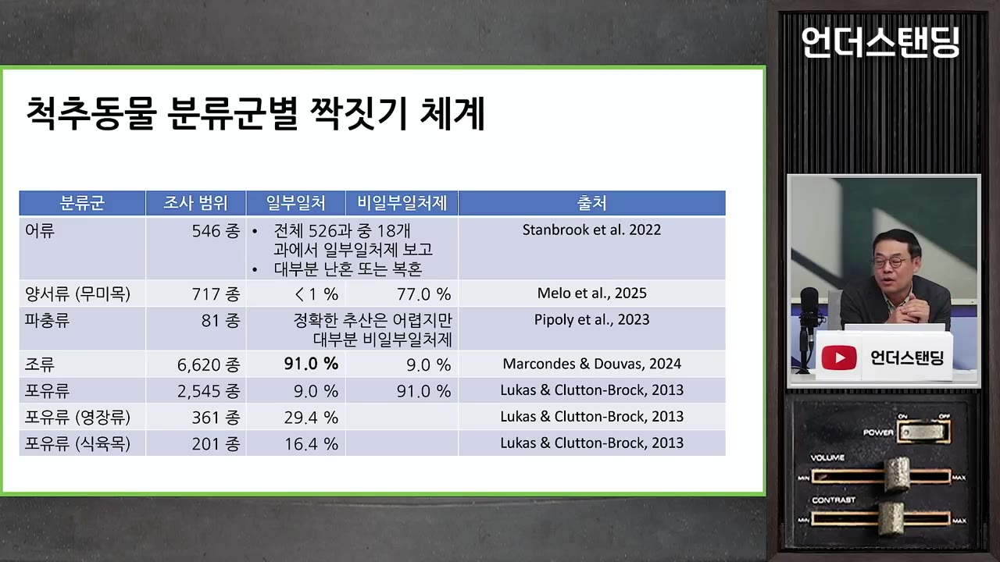
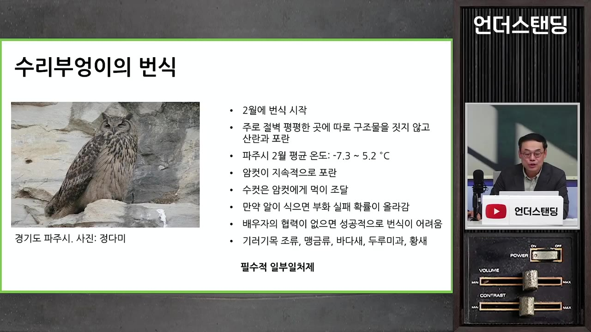
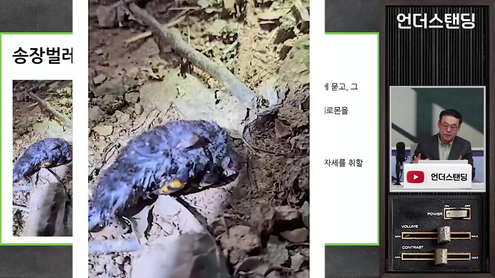
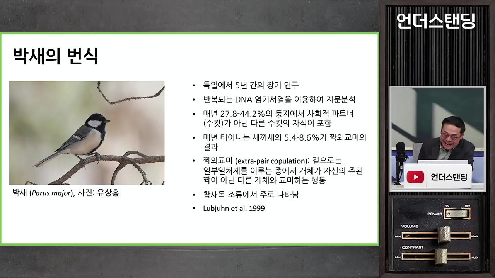
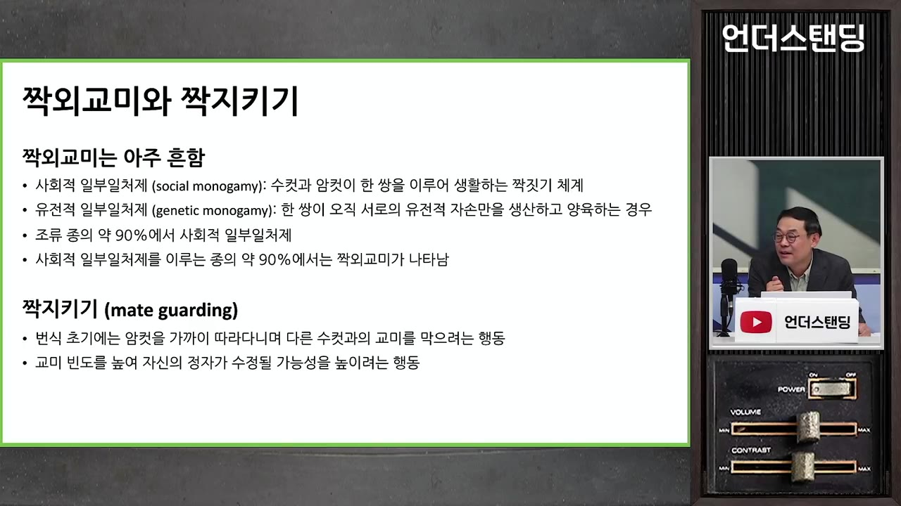
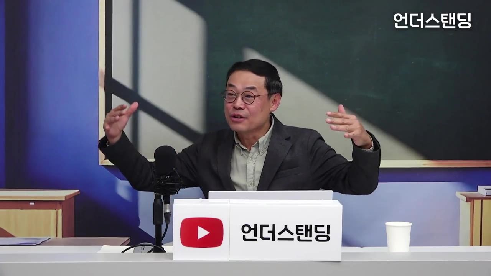
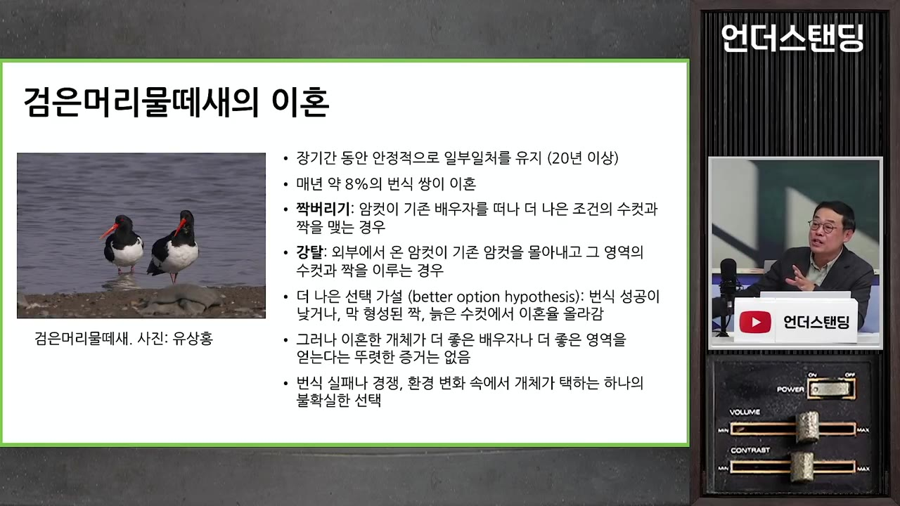
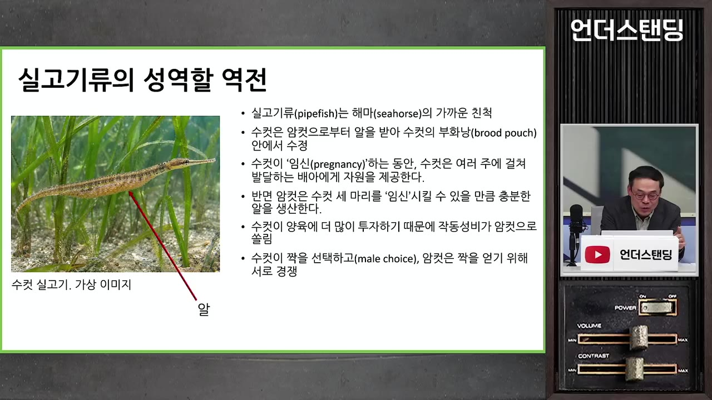
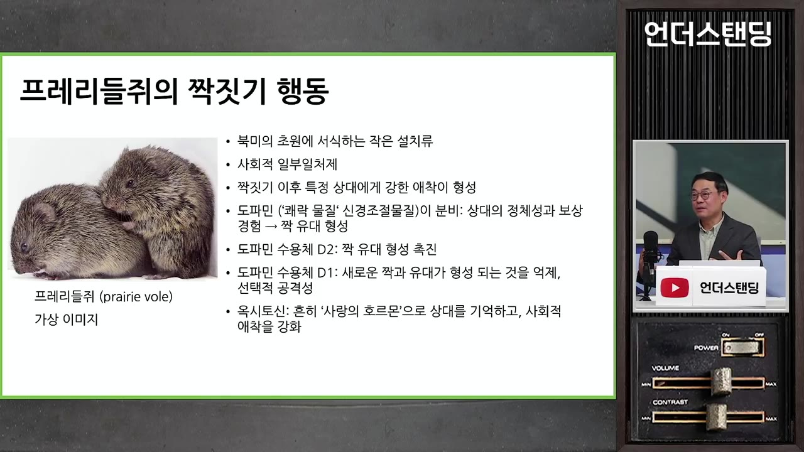

[동물의 사생활] 일부일처제 새들도 90%는 바람을 피운다? 유전자 친자 검사로 밝혀진 새들이 외도를 선택하는 이유
▶ 원본 영상 보기한눈에 보기
- 새의 91%는 사회적 일부일처제지만, 그중 약 90%의 종에서 짝이 아닌 상대와의 교미(짝 외 교미)가 DNA 검사로 확인됐다.
- 일부일처제는 사랑이나 도덕이 아니라 "누가 새끼 키우는 비용을 얼마나 내는가"에 따라 생기고 무너지는 번식 전략이다.
- 수리부엉이처럼 환경이 혹독해 수컷의 도움이 필수인 종은 철저히 일부일처고, 박새·요정굴뚝새처럼 여유가 있는 종은 암컷도 수컷도 바람을 핀다.
- 이혼, 성 역할 뒤바뀜(실고기), 호르몬으로 강제된 애착(프레리들쥐)까지 모두 "번식 성공률을 높이는 쪽으로 진화한 행동"으로 설명된다.
- 인간은 사회적 일부일처제이며, 진화적 본성에 문화·법·규범이 더해져 행동이 정해진다.
이런 분께 도움이 됩니다
- 동물 행동학의 짝짓기 이론(성선택, 부모 투자)을 쉬운 사례로 이해하고 싶은 분.
- "왜 일부일처제인가, 왜 바람이 생기는가"를 진화적 관점에서 정리해 보고 싶은 분.
핵심 내용
짝짓기 체계는 '연속선'이다
- 짝짓기 체계는 한 개체가 한 번식기 동안 확보하는 성적 파트너의 수이며, 일부일처 / 일부다처로 딱 나뉘지 않고 그 사이에 여러 단계가 있다. 바람, 이혼, 재혼, 짝 외 교미가 그 증거다.
- 암수는 서로 없이는 번식할 수 없는 협력 관계지만, 동시에 상대를 이용해 더 많은 번식 이익을 얻으려는 갈등 관계이기도 하다. 그래서 일부일처제가 항상 유리하지는 않고, 기회가 오면 새 선택지를 노릴 수 있다. (3:54, 5:25)
암수 전략은 '자식 투자'의 불균형에서 갈린다
- 1970년대부터 번식을 부모의 자식 투자 관점에서 이해하기 시작했다. 투자한 만큼 생존한 자손이 많아지면 적합도(fitness)가 올라간다.
- 생식체: 암컷은 영양이 가득한 난자를 적게, 수컷은 영양이 거의 없는 정자를 많이 만든다. 그래서 암컷을 "비싼 성"이라 부른다.
- 양육: 임신, 수유, 새끼 데리고 다니며 가르치기 등 대개 암컷이 훨씬 더 많이 투자한다.
- 작동 성비(오늘 밤 번식 가능한 암수의 수): 임신·수유 중인 암컷은 빠지므로 번식 가능한 암컷은 적고 수컷은 많다. 투자가 큰 성은 잠재 번식률이 낮아 상대를 고르는 쪽이 된다. (8:25, 10:48)
- 암컷은 한 번 난자를 만들면 바로 또 만들 수 없지만, 수컷은 정자를 거의 매일 만든다.
- 성 역할은 고정된 것이 아니라 조건에 따라 바뀐다. 이 이론에 "암컷은 ○○해야 한다"는 규칙은 없다. (49:35)
두 가지 '다윈의 수수께끼'
- 수컷은 씨를 여러 곳에 뿌리는 게 유리해 보이는데, 왜 자발적으로 일부일처를 하는가? 일부일처제는 수컷 입장에서 어떤 이익이 있는지를 따져야 설명된다.
- 암컷은 배우자가 한 마리면 모든 알을 수정시킬 수 있다. 암컷의 번식 성공은 배우자 수가 아니라 확보한 자원(먹이, 안전한 산란 장소)에 달려 있어서, 자원을 가진 수컷 한 마리를 고르는 일부일처가 유리하다. 그런데 왜 어떤 암컷은 여러 수컷과 짝을 지을까?
- 이 두 질문의 답이 아래 사례들이다.
동물계에서 일부일처제는 드문 방식이다

| 분류 | 일부일처제 비율 |
|---|---|
| 어류·양서류·파충류 | 1% 미만(연구가 어려워 정확하지 않음) |
| 포유류 | 약 9% |
| 영장류 | 약 29.4% |
| 조류 | 91% |
💡 조류만 압도적으로 일부일처가 많아서, 사람을 이해하려면 포유류보다 새를 보는 편이 더 낫다고 교수는 말한다.
일부일처제로 가는 길 ① 수컷 없으면 번식 불가: 수리부엉이

- 수리부엉이는 2월(경기도 평균 -7.3~5.2℃)에 절벽의 평평한 맨 돌 위에 알을 낳는다. 알은 약 30℃가 넘어야 부화가 진행되므로 암컷이 계속 품어야 한다. (17:18, 18:16)
- 암컷은 열을 내느라 배가 고픈데 자리를 못 뜨니, 수컷이 끊임없이 먹이를 날라야 한다. 수컷이 없거나 능력이 부족하면 알이 식어 번식이 실패한다.
- 수컷이 다른 암컷을 찾아가도 어디서든 도움이 없어 실패하므로, 바람을 피울 이유가 없다. 이를 필수적 일부일처제라 하며 기러기목, 맹금류, 바다새, 두루미과 등이 해당한다.
- 환경이 빡빡할수록 일부일처가 잘 지켜지고, 여유가 생기면 암수 모두 새 기회를 찾는다. 사람도 비슷하다고 교수는 말한다. (22:57)
일부일처제로 가는 길 ② 암컷이 막는다: 송장벌레

🔁 송장벌레의 번식 순서
- 사체 확보
- 땅에 묻기
- 가공
- 암컷 유인
- 산란
- 1사체 확보
수컷이 먹이가 될 동물 사체를 찾아 안전한 곳으로 옮긴다.
- 2땅에 묻기
땅을 파고 사체를 묻는다.
- 3가공
가죽을 벗기고 공처럼 뭉치며 미생물 처리로 썩지 않게 한다.
- 4암컷 유인
수컷이 물구나무(헤드스탠드)를 서서 꽁무니에서 페로몬을 내보낸다. (39:47)
- 5산란
암컷이 와서 짝짓기하고 사체에 알을 낳는다.
- 사체가 매우 크면 수컷이 다시 물구나무를 서서 두 번째 암컷을 부를 수 있다. 하지만 두 암컷의 새끼가 먹이를 놓고 경쟁하게 되어 첫 암컷은 손해다.
- 그래서 암컷이 수컷의 유인 자세를 보면 달려들어 물어뜯어 막는다. 이를 암컷 강요 일부일처제라 한다. (41:37, 42:08)
- 정리하면 일부일처제에 이르는 길은 ① 수컷의 도움이 필수인 경우, ② 상대의 새 배우자 획득을 적극 저지하는 경우, 두 가지다.
사회적 일부일처 vs 유전적 일부일처
- 박새는 암컷 혼자서도 어느 정도 키울 수 있다. 수컷은 "중간에 양육을 포기하고 새 둥지로 갈 때 얻는 새끼 수"와 "남아서 키울 때 얻는 새끼 수"를 저울질한다. (21:21)
- 사람에게 하는 방식과 같은 친자 검사를 새에게 했더니, 박새 둥지의 27.8~44.2%에서 다른 수컷의 새끼가 있었고, 전체 새끼 수로는 5.4~8.6%였다.

- 사회적 일부일처제: 한 쌍이 함께 살며 새끼를 키우는 것(새의 91%). 유전적 일부일처제: 새끼가 실제로 둘 사이의 자식인 것. (25:10)
- 사회적 일부일처 종의 약 90%에서 짝 외 교미가 보고됐다. 교수는 이를 90%×90%, 즉 전체 새의 약 81%에서 나타난다고 풀었다.

- 수컷은 남의 새끼를 키울 수 있어 손해지만, 선택받을 확률이 낮은 수컷에게는 "아무도 못 남기는 것보다 낫다"는 설명도 나온다. 또한 짝 외 교미는 암수가 함께 해야 성립하므로 암컷도 여유가 있다는 뜻이다. (28:16)
암컷이 바람을 피우는 이유

- 요정굴뚝새(호주 남동부): 수컷은 꽃잎을 따서 암컷에게 보여 주는 구애를 하고, 암컷은 수컷들이 영역 노래로 바쁜 새벽에 이웃 영역 수컷을 찾아가 적극 구애한다. 짝 외 부성이 약 70%다. (32:33, 34:34)
- 암컷의 짝 외 교미 가설은 아래 네 가지다. (35:33)
| 가설 | 내용 |
|---|---|
| 좋은 유전자 | 현재 배우자가 부실하면 더 양질의 수컷의 유전자를 받는다 |
| 유전적 다양성 | 불확실한 환경에 대비해 자식 유전자를 분산한다(투자 분산에 비유) |
| 근친교배 회피 | 다른 수컷의 정자를 "쇼핑"한다 |
| 번식 보험 | 소중한 알이 수정 실패하지 않도록 한다 |
- 수리부엉이 암컷도 같은 필요가 있지만, 그러면 양육 자체가 무너져 못 하는 것이다. 요정굴뚝새는 서로 양육이 되고 잘 들키지도 않아 가능하다.
수컷의 대응: 짝 지키기
- 암컷이 배란해 수정 확률이 가장 높은 시기에 수컷이 먹지도 않고 암컷을 쫓아다니며 지킨다. 그럴 수 없으면 암컷과 자주 교미해 자기 정자 수를 늘린다.
- 가을에 보이는 쌍 잠자리가 짝 지키기 행동이다. 수컷이 산란할 때까지 암컷을 붙잡고 있다. (31:06)
이혼: 검은머리물떼새

- 서해안(유부도 등)에 사는 새로, 장기간 안정적으로 짝을 유지할수록 더 많은 새끼를 키워 낸다. 그런데도 해마다 전체 쌍의 약 8%가 이혼한다. (43:54)
- 수컷은 번식·먹이 영역에 고정되어 있어, 이혼은 대개 암컷이 주도한다.
- 짝 버리기: 수컷의 영역이 부실하면 암컷이 더 좋은 수컷에게 간다.
- 강탈: 다른 암컷이 와서 기존 암컷을 쫓아내고 자리를 차지한다.
- 현재 가장 지지받는 설명은 더 나은 선택 가설이다. 번식 성공이 낮았거나 막 맺은 쌍, 늙은 수컷에서 이혼율이 높고 겨울이 혹독하면 급증한다. (46:25)
- 다만 10~20년을 추적하니 이혼한 쪽이 반드시 번식 성공이 더 높지는 않았다. (47:55)
성 역할이 뒤바뀐다: 실고기

- 실고기(해마의 가까운 친척)는 수컷이 배에 알을 붙이고 영양까지 공급하며 키운다. 어류는 대부분 양육이 없고, 양육은 알이 살아남을 확률이 너무 낮은 어려운 환경에서 진화한다. (50:57)
- 알을 낳고 키우기까지 암컷이 다 지면 위험하므로, 암컷은 난자만 만들고 수컷이 양육을 맡는 분담이 생존에 유리했을 것으로 본다(교수는 추측이라 단서를 붙임). (52:26)
- 수컷 한 마리의 배는 암컷이 가진 알의 일부만 담는다. 알을 다 넘기려면 수컷이 약 세 마리 필요해 암컷끼리 경쟁하고 수컷이 고르게 된다. (53:53)
- 성역전: 양육 투자가 작동 성비를 정하고, 작동 성비가 어느 쪽 성이 고르고 어느 쪽이 경쟁하는지를 정한다.
사랑을 호르몬으로 강제한다: 프레리들쥐

- 사랑에 빠지는 것은 번식을 위해 번식 행동에 빠져들게 하는 호르몬·신경물질의 작용이다. 프레리들쥐는 사회적 일부일처이며 짝짓기 후 애착이 생기고, 다른 이성이 나타나면 공격한다. (56:39, 57:36)
- 이성을 만나면 도파민이 나오고, 두 종류의 수용체에 따라 반응이 갈린다.
- D2에 붙으면 짝 유대가 형성되어 번식으로 이어진다.
- D1에 붙으면 새 짝과의 유대 형성을 억제한다(공격적으로 변함). (59:13)
- 불같은 순간적 사랑은 도파민이, 같이 살면서 생기는 장기 애착은 옥시토신이 맡는다.
- 번식을 막는 방향으로 작동하는 D1 수용체가 왜 진화했는지는 아직 충분히 설명되지 않았다. 천적이 많고 번식 기간이 짧은 환경이라 "지금 짝에 최선을 다하는" 쪽이 유리했을 것으로 추측한다.
인간은 어디에 있나
- 사람은 사회적 일부일처제이며, 배우자와 자원을 공유하고 자식을 함께 양육하며 장기간 애착을 맺는다. 필수적 일부일처는 아니지만 그런 요소가 있다. (1:02:04)
- 여러 배우자를 얻기 어려운 현실(질투, 강제, 문화·법적 제약)도 일부일처제를 유지시킨다. 유전적 일부일처는 아니다.
- 짝짓기 체계는 고정된 것이 아니라 환경에 맞춰 번식 성공이 가장 높은 쪽으로 바뀐다. 사람은 자연선택뿐 아니라 문화의 영향도 크게 받는다. (1:03:28)
- 교수는 양육이 오래 걸리는 사람에게 일부일처제가 사실상 불가피하다고 본다. 새도 약 9~10%는 일부다처인데, 배우자가 혼자 양육할 수 있으면 떠난다. (1:14:30)
새끼는 어떻게 알아보나: 둥지 인식과 뻐꾸기
기억할 숫자·인용
- 조류 일부일처제 91%, 포유류 약 9%, 영장류 29.4%, 어류·양서류·파충류 1% 미만
- 박새: 둥지의 27.8~44.2%에서 다른 수컷 새끼, 새끼 기준 5.4~8.6%
- 요정굴뚝새 짝 외 부성 약 70%, 검은머리물떼새 연간 이혼율 약 8%
- 수리부엉이 번식기 평균 기온 -7.3~5.2℃, 부화에 필요한 알 온도 약 30℃ 이상
- 실고기 암컷의 알을 다 받으려면 수컷 약 3마리 필요
- "일부일처제는 수컷의 관점에서 이해해야 한다" (12:53)
생각해볼 점
- 교수가 말한 "환경이 빡빡하면 일부일처, 여유가 있으면 바람"은 새 사례에서 나온 경향이다. 사람에게 그대로 옮길 수는 없다. 교수 본인도 사람은 문화·법의 영향이 크다고 덧붙였다.
- 이혼이 "더 나은 선택"이라는 가설은 장기 추적(10~20년)에서 번식 성공 증가가 확인되지 않았다는 점에서 완전히 입증된 설명이 아니다.
- 대담 중 "사회 복지가 좋으면 바람이 늘 것" 같은 말은 출연자들의 가벼운 추측이다. 영상 속 연구 결과가 아니다.
- 실고기가 수컷 양육으로 간 이유와 프레리들쥐의 D1 수용체가 왜 생겼는지는 영상에서도 가설이거나 미해결로 남아 있다.
바로 해볼 일
- 이번 주 산책길에서 새 한 쌍을 관찰하며 "누가 먹이를 나르고 누가 지키는지" 메모해 보기
- "사회적 일부일처 vs 유전적 일부일처" 구분을 주변 사람에게 한 문장으로 설명해 보기
- 영상 속 사례 중 하나(요정굴뚝새, 송장벌레, 실고기)를 골라 원 논문이나 다큐를 검색해 보기